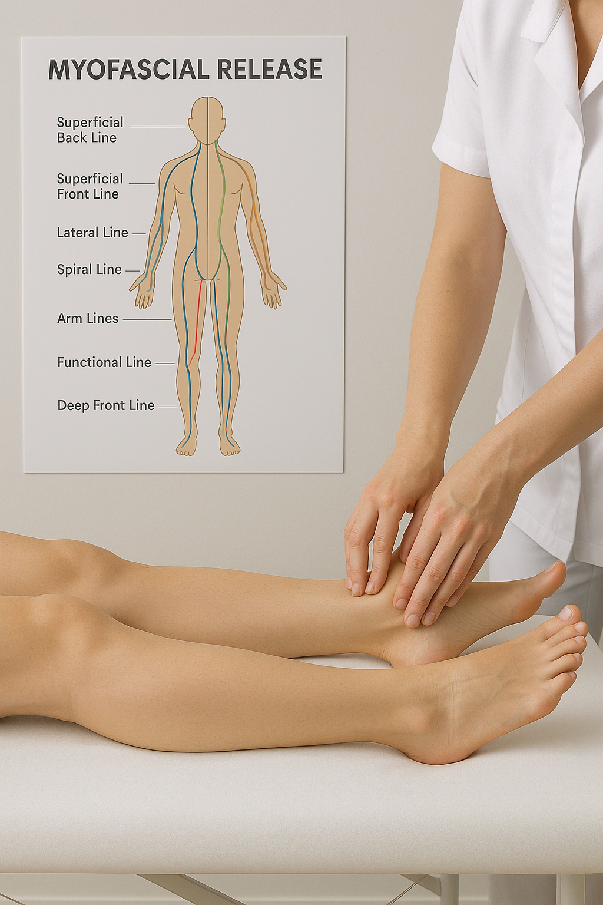

Gentle Healing for Deep-Seated Pain & Tension
Myofascial referral therapy is a hands-on treatment that works with the fascia — the connective tissue that wraps around and connects muscles, organs, nerves and joints throughout the body.
"Referral" refers to the way pain is often felt in one area but originates somewhere else. For example, shoulder pain may stem from restrictions through the elbow, wrist, knee or even the foot. Instead of chasing the painful spot, this approach follows the fascial lines and referral patterns to find and treat the true source of tension.
This therapeutic approach works with your body's natural healing processes, allowing the fascia to elongate and return to its healthy state. The result is improved circulation, reduced pain, and restored mobility.

Initial consultations may take up to an hour to establish your health history and goals moving forward
New clients
$100Returning clients
$80Package deals:
3 sessions $225
5 sessions $375
Visit me at Forward Health, Currimundi or book a mobile service, Sunshine Coast
All equipment provided - you just need to relax
Your myofascial referral/release session focuses on sustained pressure to release restrictions
We'll discuss your areas of concern and assess your posture, movement and lifestyle patterns
Sustained pressure is applied to fascial restrictions to encourage release; these are not always at the site of pain
Your body naturally responds by releasing tension and improving circulation
Movement suggestions and self-care techniques to maintain your improved mobility
Book your myofascial referral/release session and experience natural pain relief
Call to Book Email Enquiry